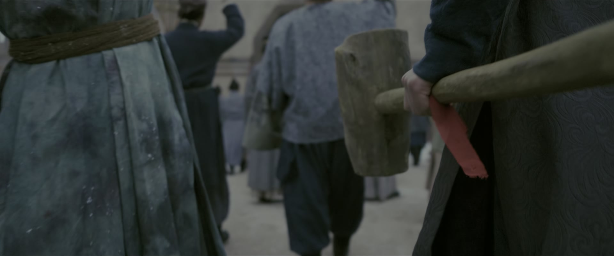
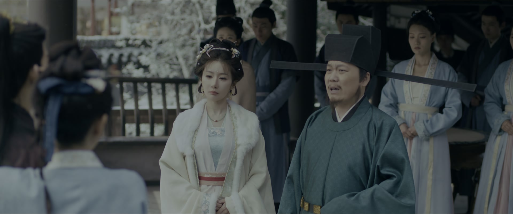
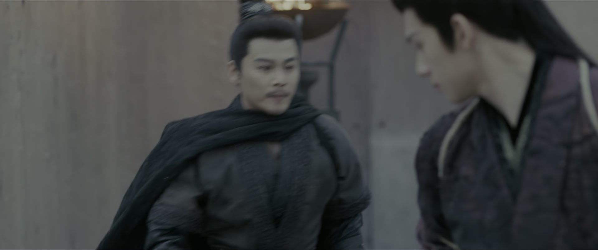
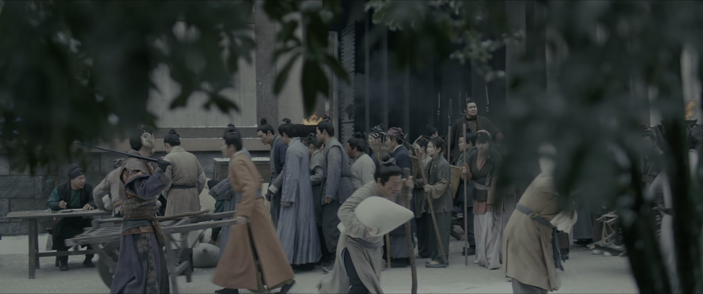
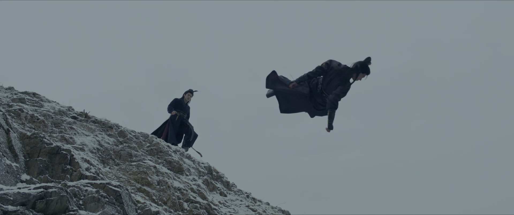
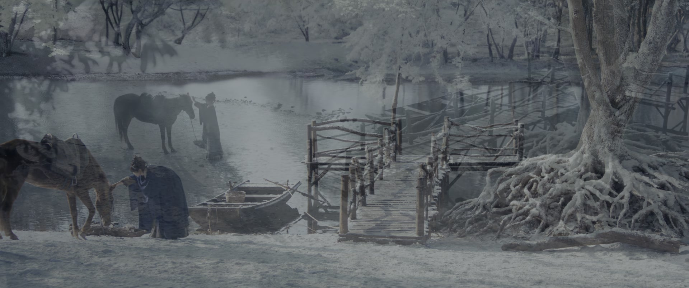

看穿棋局，先找最想赢的人
情境：暴民围城、民怨沸腾，众人只看到百姓造反，言正却一眼看穿这是有人借征粮做局，要坐实「朝廷逼反百姓」的传言。
遇到这种情况，可以这样做
- 别只看表面动作，先问谁在局中获利
- 越是民怨滔天，越要警惕有人在背后点火
- 破局的钥匙，往往在棋局之外
Drama Recap · 剧情图文总结
第 16 集 · 城门惊变
清平县征粮引发民变，有人假扮西北节度使卫宣劫持县令、伪造征粮令，企图逼反百姓、嫁祸卫党；言正识破阴谋布防守城，长玉假扮丫鬟绑人、发粮稳民心，季州军贺锦原赶到剿灭乱局——城楼之上，长信王世子岁元卿揭破武安侯谢征死而复生，言正的身份就此暴露
征粮的军令一张，清平县的天就变了。有人假扮西北节度使卫宣，劫持县令、逼百姓交粮，再暗中煽动暴民围城——只要民变一起，「朝廷征粮逼反百姓」的罪名便坐实了，要倒的正是卫相一党。言正识破这盘棋，让长玉去找王捕头死守城门；长玉则假扮丫鬟混进将军府，一把刀抵住「卫宣」的喉咙。粮食被抢回来还给百姓，暴民渐渐散去，城楼之上却有人认出了戴面具的言正——「武安侯，你竟没死！」这一夜之后，谢征的名字，重新回到朝堂与江湖的牌桌上。
言正识破有人借征粮做局——逼返乡民众退守县衙，引来秦州府兵镇压，坐实朝廷征粮逼反的传言。他让长玉去找王捕头死守城门，千万不能让暴民入城。长玉把宝儿藏进暗房，叮嘱他谁叫都别出声。城外，长信王一党正把搜刮来的军粮运出，只等民变坐大、嫁祸卫党，还派兵追捕一个被救走的孩子。
剧里的鸡毛蒜皮，往往是人生的缩影。这些情节不只是故事——当你在现实中遇到同样的处境时，它们能提醒你：先做什么、别做什么、怎么说才有效。
情境：暴民围城、民怨沸腾，众人只看到百姓造反，言正却一眼看穿这是有人借征粮做局，要坐实「朝廷逼反百姓」的传言。
情境：崔小姐求长玉救父，长玉不推诿，也先把条件摆上桌——事成之后，释放大牢里的俞掌柜。
情境：敌众我寡，长玉假扮丫鬟送汤，认准目标后果断出手，一把刀就敢绑了「将军」。
情境：县令遇事想当缩头乌龟，崔小姐点醒他：把征粮的罪过推给真正带军令来的将军，让他们给百姓交代。
情境：有人拿马家屯十几条人命煽动百姓，「拿命来赔」的喊声险些酿成一场屠杀。
情境：岁元卿假扮卫宣、制造民变，自诩运筹帷幄，却撞上谢征与贺锦原的合围，千余人马全军覆没。
情境：李怀安点破：入赘凡家对侯爷是权宜之计，对樊娘子却是一片真心错负。
言正与长玉碰头。言正告诉长玉，有人正借征粮之事鼓动村民闹事：逼返乡民众退守县衙，引来秦州府兵镇压，好坐实「朝廷征粮逼反百姓」的传言。他判断绑了县令没用，真正要做的是守住城门。
言正让长玉去找王捕头带人死守城门，千万不能让暴民入城。长玉不解——暴民也是被逼无奈，为何要拦他们。言正提醒她：这些人一旦进了城，城里的王权富贵一个都不会放过，再往前一步就是烧杀抢掠的叛军。长玉问若官府不放粮怎么办，言正说先稳住局面，其他的他来想办法。
临别前，言正叮嘱长玉：实在控制不住暴民，一定要保全自己。长玉本想带宝儿同行，言正说另有办法保证宝儿的安全，两人各自奔赴。
关键台词 · KEY QUOTES
城内，长玉把宝儿藏进暗房，叮嘱他无论谁来叫门都别出声。宝儿拉着她不放：「你一定要把我娘救出来！」长玉郑重承诺，转身离去。
城外营地，长信王一党正清点从清平百姓手里搜刮来的军粮，准备运出城去——他们的一千人马还在城外待命。为首之人下令：做足架势，让天下百姓对朝廷彻底寒心，这批暴民便不会真心归附，正可借他们闹事，把「征粮逼反」的罪名扣在朝廷头上。
手下回报：有个孩子被人救走了，已派兵去追。有人吩咐别伤了那孩子——「毕竟是我大哥的骨血」。大牢里关着的那个女人，也被一并带走，交回主上处置。
关键台词 · KEY QUOTES
县令府上，宋家伯母登门给「大小姐」送见面礼，说自家砚哥进京赶考之前对大小姐十分挂念。大小姐以母亲偶感风寒、不宜见人为由婉拒，请丫鬟送客。
出了门，宋家伯母一肚子怨气：「拿自己当什么大小姐，不过是个县令的女儿，还以为我们家砚哥真要跪着娶你！」话里话外，尽是势利与轻慢。
长玉在府中歇脚换装时，大小姐寻了过来——原来她就是被卫宣一伙挟持的崔县令之女。崔小姐认出长玉，索性把话说开：一伙人自称西北节度使卫宣，劫持了她父亲逼他征粮，郭师爷为了自保已经倒戈。她恳求长玉救父，长玉应下，却先开出条件——事成之后，去县衙大牢放了俞掌柜。崔小姐满口答应，又把自己的丫鬟衣服借给长玉。
关键台词 · KEY QUOTES

城门口骤然骚动——暴民打着要出城的名义聚集，城门却被王捕头带人死死关上。「这是要攻城啊！」官差惊呼，火速封门。
与此同时，混在城中的奸细已经换上季州军服，只等内应打开城门，接应世子杀个措手不及。有人暗叹：幸亏樊长玉察觉异常、提前布置了防务，不然真要出大乱子。
将军府里，县令派来「送汤」的丫鬟被拦在门外。那丫鬟生得标致，小兵看得入神。将军本要赶人，手下提醒——「卫宣残暴好色之名在外，没理由突然变成洁身自好的」，将军这才吩咐放人进来。
关键台词 · KEY QUOTES
长玉端着汤走进来，一口一个「官爷」伺候。将军示意她把吃食放下，长玉却已认准眼前人——管他是不是卫宣，先绑了再说。
长玉出手如电，把人拿下，撂下一句狠话：「你日后最好别落我手上，否则我一定把你剥了皮，挂到城门口曝尸！」
将军的手下围上来哀求：只要依吩咐行事，别伤将军，一切都好说。长玉不吃这套，只命人照办。
关键台词 · KEY QUOTES
城门口，县令亲自出面安抚百姓：「你们都是本分良民，不要被有心之人利用，犯下大错。愿意拿了粮食就回去的人，今日之事官府不再追究。」又抬出季州大军将至的消息，劝大家莫要自断退路。
百姓却将信将疑——「他哄着咱们回家，等待咱们的，就是和马家村一样的下场！」有人一声「杀狗官」，人群再度沸腾，官兵张弓警告：再上前者，放箭了。
幕后，长信王一党接到战报：那批运往重州的军粮在路上被劫了，出手的是两拨人马——谢征的血卫，和季州军。被卫宣关押的贺锦原竟已脱困，原来谢征早已与他勾连。
有人咬牙：「贺锦原是卫相的亲信，谢征又死查卫相旧事，他们俩怎么会联手？」为首之人却冷笑：反间计已成——只要百姓死得越多，卫党罪名就越大。「想必此时，我那好弟弟岁元卿，怕是已经遇上了他真正的对手。」
关键台词 · KEY QUOTES
县衙之内，长玉挟持「将军」逼对方放人：「放了县衙的人，不然我杀了他！」被绑的将军却不怕死，嬉笑着放话：「只要我死了，这县衙所有人都得给我陪葬！」双方僵持不下，官员们连声劝阻。
城门口，暴民趁乱冲击。不知何人放出一支冷箭，正中人群里的「狗子」。血溅当场，百姓彻底红了眼：「这些狗官什么时候把咱们的命当过人命？放箭就放箭，射死了老子，别忘了给老子收尸！」众人拔刀便要拼死。
千钧一发之际，言正的声音压过全场：「何人放的箭？找何人算账！莫要受有心之人的煽动！」他早已看穿——带队弹压的「衙役」全是假冒的，一声令下，命人拿下这些混在人群里的假衙役。
关键台词 · KEY QUOTES

好消息传来：言正的人抢下了被搜刮的军粮，正运往城门口，要退还给闹事的百姓。长玉心里却在打鼓——被自己绑住的这人，杀也不是放也不是：「真要了他的命，我这辈子怕是只能带着宁娘去山贼窝了；真若放了他，自己以后也肯定没好日子过。」
县衙内，县令被百姓逼得六神无主：「此事本官万不敢做主啊。」崔小姐急得骂他：「您可是一个县的县尊哪，您这样，连一个杀猪娘子都不如！」随即献上一计——既然暴民要说法，不如把征粮的事推给那几位将军，让他们给百姓一个交代。
县令如梦初醒，依计行事：「这个征粮令啊，是各位将军带来的军令。事到如今，就劳烦几位将军到城门口，给百姓一个交代。」女儿要跟去，被他喝令送回家。望着人群中那些「行动皆不像寻常村民」的煽动之人，崔小姐若有所思。
城门口，粮食一车车运出。百姓将信将疑地上前：「是粮食！真是粮食！我们有救了！」长玉守在粮车前，一边招呼大家排队领粮，一边暗中提防。
关键台词 · KEY QUOTES

粮食发下去了，可有人依旧不肯散：「粮食的问题解决了，那我们马家屯十几条人命怎么赔？拿狗官一家老小的命来赔吗！」人群再度躁动。
细作趁机煽风点火：「这个狗县令压根没把咱们当人看，也不想给咱们交代！这次若被哄骗回去，以后就等着被衙役打死吧！」一声「杀县令」，暴民朝县衙冲去，官差急忙护住县令。
混战之中，长玉被押住也不肯低头：「姑奶奶今天没带杀猪刀，不然就让你见识见识，我女屠户是怎么发威的！」
城外，武安侯的军队已至，与众将齐声立誓：「为了守护城中百姓安宁，今日与我并肩作战！」大军合围，岁元卿埋伏在城外的一千人马全军覆没，他难以置信：「贺锦原的季州军来得这么快？」
关键台词 · KEY QUOTES

季州府来的将军入城，县令连忙上前请罪：「还好您来了，要不然，下官就算把这副尸骨填在城墙上，也拦不住这帮反民哪。」将军点头：「今日城中百姓能够幸免于难，崔大人功不可没。」县令顺势请功，把功劳记在自己和王捕头头上。
王捕头却不愿居功：「大人若真要赏，就给这些死伤的衙役们，多些抚恤的银钱吧。」话锋一转，他又替长玉请赏——那丫头守城有功，应当论功行赏。将军闻言想起一事：「刚才我在城楼上，看见一个戴面具的英雄，是何方高人？」
城门口，百姓排着队领粮。有人认出长玉，问她「敢问姑娘芳名，日后在哪里相见」，被她一句「少废话」怼了回去。乱世里难得的一点暖意，就这么散在人群里。
关键台词 · KEY QUOTES

城楼上，一名戴面具的箭手护住长玉。被擒的「将军」抬眼看她，忽然大笑出声：「武安侯？你竟没死！」原来这「将军」不是别人，正是长信王世子岁元卿——他假扮卫宣、伪造征粮令，要的就是一场民变。
岁元卿拿长玉做文章，言语轻佻：「城楼上那小丫鬟，是你何人？她身上好白呀，亲上去的滋味，可真甜。」言正眼神骤冷。
两人交手。岁元卿一边打一边嘴硬：「在下所率不过百骑，武安侯的血卫，也不过如此吧。」言正淡淡回敬：「你若是真有本事，即便没有情报，也不至于如此狼狈。」
岁元卿被制住，仍不忘撂话：「今日这笔账算是记下了。等在下伤好了，再与侯爷较量一番，定让侯爷知道何为狼狈！」言正不紧不慢：「本侯拭目以待。」经此一役，「武安侯死而复生」的消息，注定瞒不住了。
关键台词 · KEY QUOTES

夜，李怀安求见言正，欲与其结盟：「侯爷若想稳定西北局势，定是用得上我。」言正婉拒，留下一句意味深长的话：「等你想明白，自己到底应该姓什么，再来找本侯谈合谋。」
李怀安不死心，剖白心迹：「可我有我之所求——天下太平，百姓不再受战乱之苦。」临别前，他替长玉说了一句公道话：「入赘凡家，对侯爷来说或许是权宜之计；但对樊娘子来说，却是一片真心错负，未免也太残忍了些。」言正只答一句：「本侯的家事，就不劳烦李大人费心了。」
另一边，长玉终于回家。言正迎上来：「怎么才回来？有没有受伤啊？」长玉满不在乎：「那贼人逃了，我沿路追了他几十里。都说千年王八万年龟，那龟孙沉底之后，不会不死吧？」
说到一半，她忽然想起城楼上岁元卿那句轻薄话，怔怔出神。言正唤她，她才回过神来，说一路上用绳子绑了那龟孙、还拿刀扎了他好几下，总算报了仇。两人相视一笑——乱世的刀光剑影，在这一刻都被收进了屋檐下的灯影里。
关键台词 · KEY QUOTES
假扮丫鬟送汤绑「将军」，城门口发粮稳民心，被押仍放话「没带杀猪刀」，一路追贼报仇，胆识与锋芒尽显。
识破征粮逼反的连环局，布置守城防务，与季州军贺锦原联手截粮剿敌；城楼上被岁元卿认出，「死而复生」的身份自此暴露。
劫持县令、伪造征粮令，制造民变嫁祸卫党；被擒仍嬉皮笑脸，调戏长玉，最后被谢征拿下。
原被卫宣关押，暗中与谢征结盟，率季州军赶到清平，剿灭岁元卿千余精兵。
夜访言正求盟被婉拒；点破「入赘凡家」对长玉太过残忍，留下一句旁观者清。
被卫宣劫持被迫征粮，遇事胆怯不敢做主；依女儿的背锅计脱身，事后向贺锦原请功。
向长玉求救救父，献上把将军们推出去背锅的计策；言语间处处透着清醒与决断。
长玉假扮丫鬟送汤进府，认准目标出手如电，一句「剥了皮挂到城门口曝尸」，屠户女的狠劲拉满。
城楼之上，岁元卿认出面具后的言正——隐姓埋名的假书生第一次在敌人面前露出真身，身份线全面引爆。
暴民中一声冷箭，活生生的人倒在城门口。无论这一箭是谁放的，都足以点燃整座城。
被押住的长玉照样嘴硬：「不然就让你见识见识，我女屠户是怎么发威的！」
崔小姐骂她爹：「您可是一个县的县尊哪，您这样，连一个杀猪娘子都不如！」——最狠的评价，其实是最大的夸赞。
「对樊娘子来说，却是一片真心错负」——最懂言正的人，说出全剧最扎心的一句旁观者清。
岁元卿一句「你竟没死」，把言正的身份暴露在长信王一党眼前。卫相与长信王都将闻风而动，谢征的复仇大业从此再无退路。
谢征以「想明白自己该姓什么」作为与李怀安结盟的条件——李怀安的身世藏着怎样的秘密？他为何会与卫党纠缠不清？
李怀安点破谢征与长玉的婚事不过是权宜之计。长玉的一片真心，终有一天要直面假婚的真相。
长玉救人的条件，是事成之后释放县衙大牢里的俞掌柜。此人是谁，与长玉、俞浅浅又有何渊源？
反派口中「我大哥的骨血」——那个被救走的孩子与长信王府关系匪浅。宝儿的身份，或许藏着长信王一党的致命软肋。